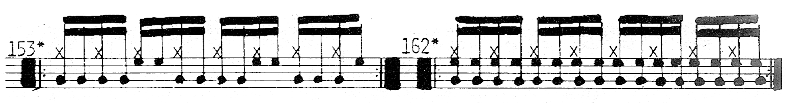
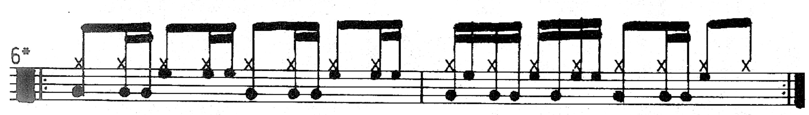

Review: A Funky Primer by Charles Dowd
Posted on March 28, 2021

It was a bit challenging to work on anything especially ambitious this week: I’ve been hard at work finishing up my band’s new website, and we have just one or two more things to take care of for our EP which has been keeping me busy as well. Add to that a bunch of work I’m doing on this site to make it easier to read on mobile. Oh, and then there’s that whole business of somebody shooting up the grocery store I used to go to up until barely a year ago. I guess you could say that’s been messing with my productivity.
This is a bit of a sleepy post, but in my quest to expand and diversify the content on my site, I’ve been meaning to take a look at drum books. I think drum books are a great way to learn and they have been an important part of my life since I first picked up the instrument. I’ve spent time with quite a few books and I have many more that I want to go through, but I also want to take the opportunity to write a little something about each one.
I plan on discussing the books more or less in the order I picked them up. There are a couple I’ll probably skip because they’re already so revered and well–known. Two examples that come to mind are Stick Control for the Snare Drummer and Progressive Steps to Syncopation for the Modern Drummer. If you want a tl;dr both are indispensable, even though Stick Control can be tedious and a bit redundant, while Syncopation requires a lot of work from the reader to get the most out of it.
Today we will be looking at A Funky Primer for the Rock Drummer, written by Charles Dowd, and first published in 1985. As the name suggests, the book is meant to bring a funkier edge to a drummer’s standard rock playing (i.e. to help a drummer break the mold that comes from playing straight–ahead rock grooves).
The meat and potatoes of A Funky Primer is basically lessons on how to play steady 8th notes on the cymbal while playing kick and snare notes that are in between the cymbal notes:
The book starts with some warmup exercises before presenting different funk rhythms on the snare over quarters on the kick, in a Syncopation–like style. These aren’t really all that important, so you’ll probably be fine if you skip them. The book then goes through basic 8th notes grooves before breaking down some denser patterns with cymbal and snare only. Interestingly, there’s no similar section focusing on just cymbal and kick — afterward, it’s on to full grooves.
A Funky Primer does work quite well in teaching you the basic moves of funk, and it works well as a method book; I dug it up for the first time in years when I was a senior in high school and I had totally forgotten much of it. Just farting around with the text was a lot of fun, as there are some interesting patterns in here.
If a drummer has gotten down the basics of playing backbeat–oriented grooves, this is a great next step towards evolving one’s playing. A Funky Primer also has a well–executed difficulty curve throughout its ~23–page main section. Most of the stuff is built around 8th notes and 16th notes, but 16th note triplets are introduced in the final pages.
Some of the grooves are presented as one–bar exercises, while others are two–bar exercises. I’m not really sure why the book delineates between them; you’re probably better off combining the patterns as you please. I must point out how the book has several grooves that are difficult to find the potential musicality in, at least as they are written:
Some of them might work better as a fill more so than a groove you would use to drive a 16 bar phrase.
In addition, the book is lacking in an application of ghost notes. Listen to me play the following exercise twice, and notice how much it transforms when I ghost most of the snare notes on the second go–around:
Obviously, a drummer can add in the ghost notes themselves, although this may prove more challenging for a beginner. What’s more troubling is that there isn’t even a discussion about ghost notes in the book; despite a lengthy foreword and afterword, articulations aren’t mentioned at all.
Another ostensible limitation involves the cymbal: since it just plays straight–ahead 8th notes, it’s not quite possible to learn gnarly, David Garibaldi–style grooves (without some serious extrapolation). But I suppose that’s beyond the scope of the book; it is a Primer after all. The final two pages of exercises involve playing gallop and triple–beat patterns on the cymbal, but it’s ultimately lip service. Like with the ghost notes, there should be some discussion of this.
Instead, there is some unnecessary discourse about double bass (which is largely absent in the world of funk). There’s also this bizzare nugget: “always remember to tune tom–toms, snare, and bass as one would like them to be heard in the audience… not as they sound at the set”. Another section reminds us that the professional drummer “does not allow his drums to scoot away from him and fall off the stage”.
I’m also a bit befuddled by the grooves that are marked with an asterisk. According to Dowd, these grooves are used by “top professional rock drummers and recording artists”. I don’t really know how to interpret that; some drummers online think these patterns were lifted directly from different songs, but it seems like 3/4 of the grooves are marked.
One last thing to bring up: it appears that the copyist made a flew blunders for final the published version. It would be nice to see a new edition with some corrections, as well as some actual engraving with updated drum set notation.
But all in all, A Funky Primer is a pretty good book if you want to get to grips with the independence/interdependence of funk drumming. It will give you both a usable and accessible perspective for your own playing.